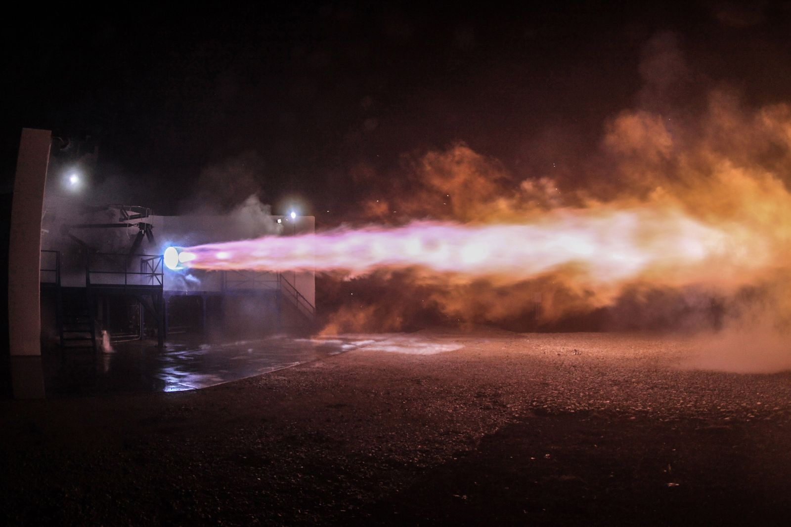

Independent propulsion review — est. 2021
Thrust is a promise the plumbing has to keep.
Dr Adrian Kessler reviews liquid rocket engines and turbopumps for the people who have to fire them: propulsion analysis, test-readiness reviews and trade studies for space startups, research groups and suppliers. He sells no hardware and holds no stake in any engine — the review is the product, and it is allowed to say no.

Propellant comparator
DATA: TEXTBOOK CLASS FIGURESSpecific impulse — Isp — is thrust per unit of propellant flow: how hard an engine pushes for each kilogram it throws away. Pick a propellant combination and read its sheet. Every figure is a class figure, the band any textbook gives for that combination — not a promise about any particular engine.
- Combination
- LOX / CH4 — methalox
- Specific impulse
- ≈ 360 s specific impulse, vacuum class
Textbook vacuum band 350–380 s for this class - Bulk density
- ≈ 830 kg/m³ combined, at a typical mixture ratio near 3.6 : 1
- Density impulse
- ≈ 300,000 s·kg/m³ — Isp class × bulk density
- Storage
- Both cryogenic: methane −162 °C, oxygen −183 °C
- Cycles it suits
- Full-flow staged combustion in current designs; also gas-generator
- Handling, honestly
- The modern compromise. Both fluids are cryogenic but their temperatures sit close together, which keeps tank insulation and shared-bulkhead layouts simple. Methane burns cleaner than kerosene — far less carbon deposition in cooling passages — which is why reuse programmes keep choosing it. It still boils off, still needs chill-down, and its density is unremarkable: the tanks are bigger than a kerosene stage’s, smaller than a hydrogen stage’s by a wide margin.
| Combination | Isp class (s) | Bulk density (kg/m³) | Density impulse (s·kg/m³) | Storage |
|---|---|---|---|---|
| LOX / CH4 | ≈ 360 | ≈ 830 | ≈ 300,000 | Both cryogenic |
| LOX / LH2 | ≈ 450 | ≈ 360 | ≈ 163,000 | Both cryogenic, hydrogen at −253 °C |
| LOX / RP-1 | ≈ 330 | ≈ 1,030 | ≈ 339,000 | Fuel near ambient, oxygen cryogenic |
| MMH / NTO | ≈ 320 | ≈ 1,160 | ≈ 373,000 | Both at room temperature, for years |
Read the density-impulse column as the trade in one number: hydrogen wins on Isp and loses on density, so its tanks grow; the storables lose on Isp and win on density and patience. There is no best propellant — there is a best propellant for a stated mission, which is what a trade study is for (Case 03).
The rocket equation, worked
TSIOLKOVSKY, 1903One equation runs this whole trade. Δv — the change in velocity a stage can deliver — is its Isp times standard gravity times the natural logarithm of its mass ratio: fully fuelled mass divided by empty mass. Set the two inputs and the sheet does the substitution in the open.
Real stages live between roughly 3 and 10. Past 10 you are mostly building tank.
Check the panel against print: set Isp to 450 s and the mass ratio to 5.0 — the sheet must read Δv = 7.10 km/s (450 × 9.80665 × 1.6094 = 7,102 m/s). If it ever disagrees with the arithmetic, the panel is wrong, not the equation. And one honesty note: reaching low orbit from the pad budgets roughly 9.4 km/s once gravity and drag losses are counted — which is why launch vehicles are staged, and why the mass-ratio column is fought over in every design review.
Engagements, current & recent
LOG: KP SERIES| Ref | Engagement | Client | Propellant | Status |
|---|---|---|---|---|
| KP-014 | Test-readiness review — first hot-fire campaign | Small-launcher startup, DE | LOX/CH4 | COMPLETE |
| KP-017 | Performance investigation — 2% Isp shortfall | Launch-services firm, FR | LOX/RP-1 | COMPLETE |
| KP-019 | Propellant trade study — first-stage architecture | Early-stage startup, ES | LOX/RP-1 vs LOX/CH4 | COMPLETE |
| KP-021 | Cycle model audit — demonstrator engine | University research group, NL | LOX/LH2 | IN PROGRESS |
| KP-022 | Test campaign plan — bipropellant thruster | Spacecraft supplier, UK | MMH/NTO | BOOKED — DEC 2026 |
What a review costs
RATE CARD 2026 · EUR, EXCL. VATWhat moves the price
- Engine class & cycleA staged-combustion engine takes longer to review honestly than a pressure-fed one.
- Data volumeChannels × test seconds. Two hundred channels of hot-fire data is a different job from twenty.
- Programme phaseA concept review, a CDR review and a test-readiness review are three different depths of reading.
- ScheduleWork needed inside six weeks carries +25%. Stand windows are expensive; so is the calendar that protects them.
- On-site daysCharged at the day rate, travel at cost, agreed before anyone books a train.
From the Case 01 client
ATTACHED TO KP-014“The review found in our paperwork what would otherwise have found us on the stand. The chill-down finding alone paid for it — we fired first time, on the day we had told our investors we would.”
— Sabine Roth, Programme Manager, the Case 01 client (small-launcher startup, Germany)
A test campaign is the most expensive way to find a paperwork error.
Send the enquiry before the stand is booked, not after. First reply within two working days, with a scoped price or an honest refusal.